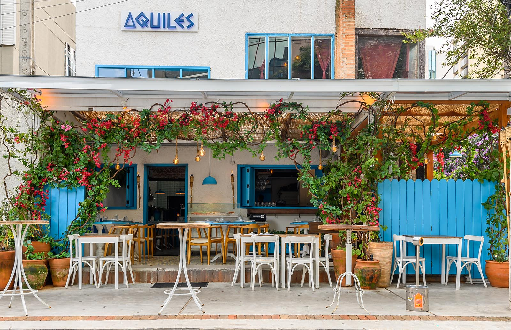

Sabores do SENAC

O Raízes & Sabores nasceu de uma paixão familiar pela gastronomia em 2024. O restaurante começou como um pequeno negócio local, oferecendo receitas tradicionais transmitidas por gerações. Com um ambiente acolhedor e um cardápio inspirado nas raízes da culinária regional, rapidamente conquistou o coração dos clientes.
Com o passar dos anos, o restaurante evoluiu, incorporando influências modernas sem perder a essência familiar que o tornou especial. O sucesso permitiu que a cozinha fosse ampliada, trazendo novos chefs talentosos e criando pratos exclusivos que misturam tradição e inovação. Esse equilíbrio fez com que o Raízes & Sabores se tornasse uma referência na cidade, reconhecido por sua qualidade e atendimento personalizado.
Hoje se torna um ponto de encontro para quem busca não só uma refeição saborosa, mas também uma experiência gastronômica completa. Mantendo suas raízes, mas sempre olhando para o futuro, continuamos a evoluir e a criar momentos memoráveis para nossos clientes, mantendo viva a essência que nos trouxe até aqui.